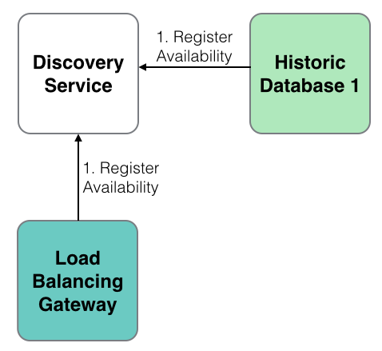
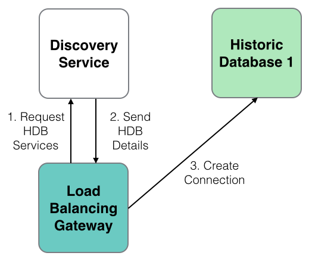
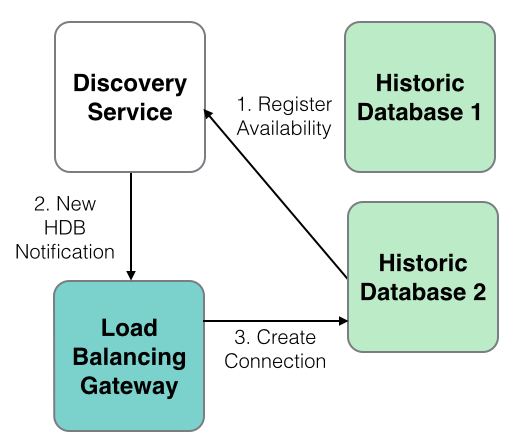
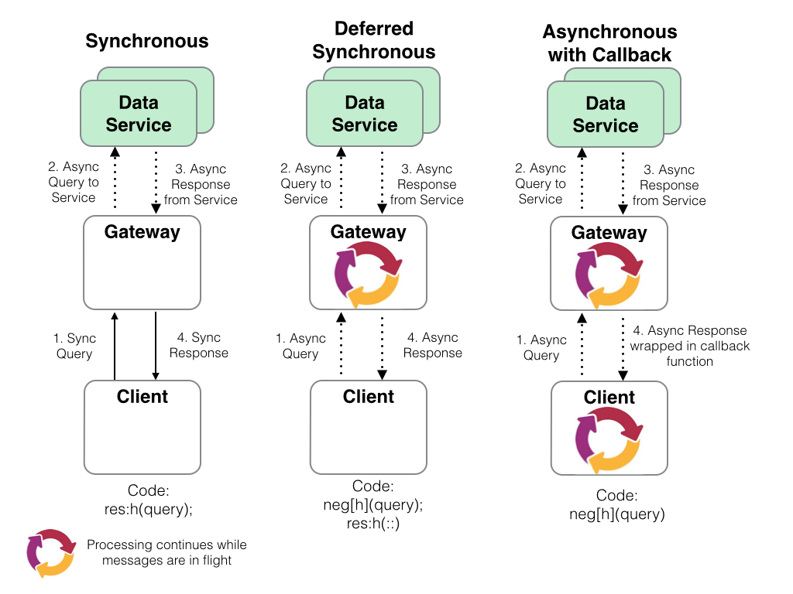
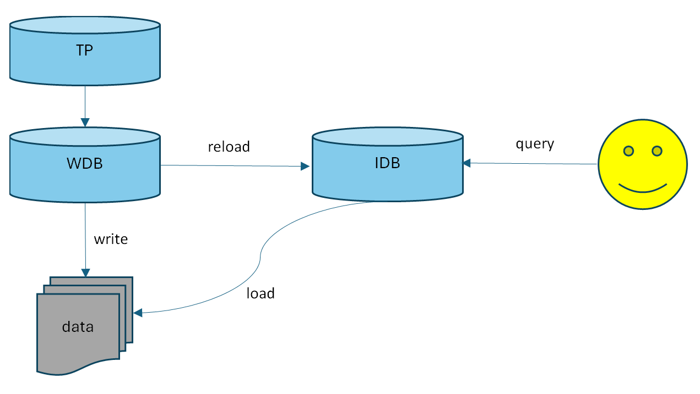
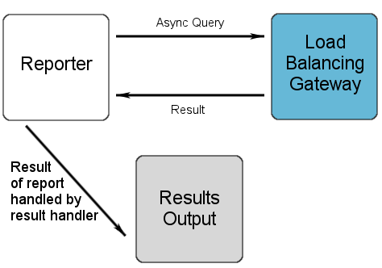
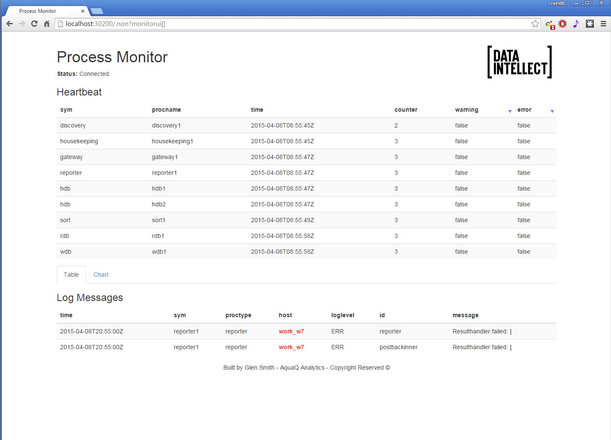

Processes
A set of processes is included. These processes build upon Data Intellect TorQ, providing specific functionality. All the process scripts are contained in $KDBCODE/processes. All processes should have an entry in $KDBCONFIG/process.csv. All processes can have any type and name, except for discovery services which must have a process type of “discovery”. An example process.csv is:
aquaq$ cat config/process.csv
host,port,proctype,procname
aquaq,9998,rdb,rdb_europe_1
aquaq,9997,hdb,rdb_europe_1aquaq,9999,hdb,hdb1
aquaq,9996,discovery,discovery1
aquaq,9995,discovery,discovery2
aquaq,8000,gateway,gateway1
aquaq,5010,tickerplant,tickerplant1
aquaq,5011,rdb,rdb1
aquaq,5012,hdb,hdb1
aquaq,5013,hdb,hdb2
aquaq,9990,tickerlogreplay,tpreplay1
aquaq,20000,kill,killhdbs
aquaq,20001,monitor,monitor1
aquaq,20002,housekeeping,hk1
Discovery Service
Overview
Processes use the discovery service to register their own availability, find other processes (by process type) and subscribe to receive updates for new process availability (by process type). The discovery service does not manage connections- it simply returns tables of registered processes, irrespective of their current availability. It is up to each individual process to manage its own connections.
The discovery service uses the process.csv file to make connections to processes on start up. After start up it is up to each individual process to attempt connections and register with the discovery service. This is done automatically, depending on the configuration parameters. Multiple discovery services can be run in which case each process will try to register and retrieve process details from each discovery process it finds in its process.csv file. Discovery services do not replicate between themselves. A discovery process must have its process type listed as discovery.
To run the discovery service, use a start line such as:
aquaq $ q torq.q -load code/processes/discovery.q -p 9995 -proctype discovery -procname discovery1
Modify the configuration as required.
Operation
-
Processes register with the discovery service.

-
Processes use the discovery service to locate other processes.

-
When new services register, any processes which have registered an interest in that process type are notified.

Available Processes
The list of available processes can be found in the .servers.SERVERS table.
q).servers.SERVERS
procname proctype hpup w hits startp lastp endp attributes
-------------------------------------------------------------------------------------
discovery1 discovery :aquaq:9995 0 2014.01.22D17:00:40.947470000 ()!()
discovery2 discovery :aquaq:9996 0 2014.01.22D17:00:40.947517000 ()!()
hdb2 hdb :aquaq:5013 0 2014.01.22D17:00:40.947602000 ()!()
killtick kill :aquaq:20000 0 2014.01.22D17:00:40.947602000 ()!()
tpreplay1 tickerlogreplay :aquaq:20002 0 2014.01.22D17:00:40.947602000 ()!()
tickerplant1 tickerplant :aquaq:5010 6 0 2014.01.22D17:00:40.967699000 2014.01.22D17:00:40.967698000 ()!()
monitor1 monitor :aquaq:20001 9 0 2014.01.22D17:00:40.971344000 2014.01.22D17:00:40.971344000 ()!()
rdb1 rdb :aquaq:5011 7 0 2014.01.22D17:06:13.032883000 2014.01.22D17:06:13.032883000 `date`tables!(,2014.01.22;`fxquotes`heartbeat`logmsg`quotes`trades)
hdb3 hdb :aquaq:5012 8 0 2014.01.22D17:06:18.647349000 2014.01.22D17:06:18.647349000 `date`tables!(2014.01.13 2014.01.14;`fxquotes`heartbeat`logmsg`quotes`trades)
gateway1 gateway :aquaq:5020 10 0 2014.01.22D17:06:32.152836000 2014.01.22D17:06:32.152836000 ()!()
Gateway
A synchronous and asynchronous gateway is provided. The gateway can be used for load balancing and/or to join the results of queries across heterogeneous servers (e.g. an RDB and HDB). Ideally the gateway should only be used with asynchronous calls. Prior to KDB v3.6, synchronous calls caused the gateway to block which limits the gateway to serving one query at a time (although if querying across multiple backend servers the backend queries will be run in parallel). For v3.6+, deferred synchronous requests to the gateway are supported. This allows the gateway to process multiple synchronous requests at once, therefore removing the requirement for the gateway to allow only one type of request. When using asynchronous calls, the client can either block and wait for the result (deferred synchronous) or post a call back function which the gateway will call back to the client with. The backend servers to be queried against with asynchronous and synchronous queries are selected using process type. The gateway API can be seen by querying .api.p“.gw.*” within a gateway process.

Asynchronous Behaviour
Asynchronous queries allow much greater flexibility. They allow multiple queries to be serviced at once, prioritisation, and queries to be timed out. When an asynchronous query is received the following happens:
-
the query is placed in a queue;
-
the list of available servers is retrieved;
-
the queue is prioritised, so those queries with higher priority are serviced first;
-
queries are sent to back end servers as they become available. Once the backend server returns its result, it is given another query;
-
when all the partial results from the query are returned the results are aggregated and returned to the client. They are either returned directly, or wrapped in a callback and posted back asynchronously to the client.
The two main customisable features of the gateway are the selection of available servers (.gw.availableservers) and the queue prioritisation (.gw.getnextqueryid). With default configuration, the available servers are those servers which are not currently servicing a query from the gateway, and the queue priority is a simple FIFO queue. The available servers could be extended to handle process attributes, such as the available datasets or the location of the process, and the queue prioritisation could be modified to anything required e.g. based on the query itself, the username, host of the client etc.
An asynchronous query can be timed out using a timeout defined by the client. The gateway will periodically check if any client queries have not completed in the allotted time, and return a timeout error to the client. If the query is already running on any backend servers then they cannot be timed out other than by using the standard -T flag.
Synchronous Behaviour
Prior to KDB v3.6, when using synchronous queries the gateway could only handle one query at
a time and cannot timeout queries other than with the standard -T flag. The variable
.gw.synccallsallowed is by default set to 0b prior to KDB v3.6.
To send synchronous calls, edit the gateway.q file so that .gw.synccallsallowed
is set to true. (The exception being with TorQ-FSP, in which case it is set to 1b by default.)
For v3.6+, deferred synchronous calls are supported, allowing the gateway to process multiple
requests at a time.
All synchronous queries will be immediately dispatched to the back end
processes. They will be dispatched using an asynchronous call, allowing
them to run in parallel rather than serially. When the results are
received they are aggregated and returned to the client.
Process Discovery
The gateway uses the discovery service to locate processes to query across. The discovery service will notify the gateway when new processes become available and the gateway will automatically connect and start using them. The gateway can also use the static information in process.csv, but this limits the gateway to a predefined list of processes rather than allowing new services to come online as demand requires.
Error Handling
All errors and results can now be formatted with the formatresult function. Each response to the client is passed through this function with inputs status (1b=result,0b=error), sync (1b=sync,0b=async) and result (result/error) to allow different errors/results to be handled appropriately. As default, when synchronous calls are used, q errors are returned to clients as they are encountered. When using asynchronous calls, appropriately prefixed strings are used. It is up to the client to check the type of the received result and if it is a string then whether it contains the error prefix. The error prefix can be changed, but the default is “error: ”. Alternatively, the formatresult function can be altered as necessary. Errors will be returned when:
-
the client requests a query against a server type which the gateway does not currently have any active instances of (this error is returned immediately);
-
the client requests a query with the wrong servertype types;
-
the client requests a query with null servers;
-
the query is timed out;
-
a back end server returns an error;
-
a back end server fails;
-
the join function fails.
If postback functions are used, the error string will be posted back within the postback function (i.e. it will be packed the same way as a valid result).
Client Calls
There are four main client calls. The .gw.sync* methods should only be invoked synchronously, and the .gw.async* methods should only be invoked asynchronously. Each of these are documented more extensively in the gateway api. Use .api.p“.gw.*” for more details.
| Function | Description |
|---|---|
| .gw.syncexec[query; servertypes] | Execute the specified query synchronously against the required list of servers. If more than one server, the results will be razed. |
| .gw.syncexecj[query; servertypes; joinfunction] | Execute the specified query against the required list of servers. Use the specified join function to aggregate the results. |
| .gw.asyncexec[query; servertypes] | Execute the specified query against the required list of servers. If more than one server, the results will be razed. The client must block and wait for the results. |
| .gw.asyncexecjpt[query; servertypes; joinfunction; postback; timeout] | Execute the specified query against the required list of servers. Use the specified join function to aggregate the results. If the postback function is not set, the client must block and wait for the results. If it is set, the result will be wrapped in the specified postback function and returned asynchronously to the client. The query will be timed out if the timeout value is exceeded. |
Client Call Examples
Here are some examples for using client calls via a handle to the gateway process.
To reiterate, v3.6+ users can use synchronous calls, whilst asynchronous calls are only relevant for users on < v3.6.
Calls to the RDB only
For synchronous calls
// To return the avg price per sym for the day so far
q) h(`.gw.syncexec;"select avp:avg price by sym from trade where time.date=.z.d";`rdb)
// hloc function in RDB process
q) h(`.gw.syncexec;`hloc;`rdb)
{[startdate;enddate;bucket]
$[.z.d within (startdate;enddate);
select high:max price, low:min price, open:first price,close:last price,totalsize:sum `long$size, vwap:size wavg price
by sym, bucket xbar time
from trade;
([sym:`symbol$();time:`timestamp$()] high:`float$();low:`float$();open:`float$();close:`float$();totalsize:`long$();vwap:`float$())]}
// Using the hloc function - change query for appropriate date
q) h(`.gw.syncexec;(`hloc;2020.01.08;2020.01.08;10);`rdb)
// Returns following table
sym time | high low open close totalsize vwap
----------------------------------| ----------------------------------------------
AAPL 2020.01.08D00:00:00.836801000| 103.62 103.62 103.62 103.62 88 103.62
AAPL 2020.01.08D00:00:01.804684000| 103.64 103.64 103.64 103.64 86 103.64
AAPL 2020.01.08D00:00:02.405682000| 103.86 103.86 103.86 103.86 90 103.86
AAPL 2020.01.08D00:00:03.005465000| 104.06 104.06 104.06 104.06 78 104.06
AAPL 2020.01.08D00:00:03.404383000| 103.9 103.9 103.9 103.9 49 103.9
..
For asynchronous calls
// To return the sum size per sym for the day so far
q) neg[h](`.gw.asyncexec;"select sum size by sym from trade";`rdb);h[]
Calls to the HDB only
For synchronous calls
// For the high, low, open and close prices of the day before
q) h(`.gw.syncexec;"select h:max price, l:min price, o:first price, c:last price by sym from trade where date=.z.d-1";`hdb)
For asynchronous calls
q) neg[h](`.gw.asyncexec;"`$last .z.x";`hdb);h[]
Calls to the HDB and RDB
For synchronous calls
q) h(`.gw.syncexec;"$[.proc.proctype=`hdb; select from trade where date within (.z.d-2;.z.d-1); select from trade]";`rdb`hdb)
For asynchronous calls
q) neg[h](`.gw.asyncexec;"$[.proc.proctype=`hdb; select from trade where date within (.z.d-2;.z.d-1); select from trade]";`rdb`hdb);h[]
Demonstrating Aggregation of data
For the purposes of demonstration, assume that the following queries must be run across a single RDB and a single HDB process, and the gateway has one RDB and two HDB processes available to it.
q).gw.servers
handle| servertype inuse active querycount lastquery usage attributes
------| --------------------------------------------------------------------
7 | rdb 0 1 17 2014.01.07D17:05:03.113927000 0D00:00:52.149069000 `datacentre`country!`essex`uk
8 | hdb 0 1 17 2014.01.07D17:05:03.113927000 0D00:01:26.143564000 `datacentre`country!`essex`uk
9 | hdb 0 1 2 2014.01.07D16:47:33.615538000 0D00:00:08.019862000 `datacentre`country!`essex`uk
12 | rdb 0 1 2 2014.01.07D16:47:33.615538000 0D00:00:04.018349000 `datacentre`country!`essex`uk
Both the RDB and HDB processes have a function f and table t defined. f will run for 2 seconds longer on the HDB processes then it will the RDB.
q)f
{system"sleep ",string x+$[`hdb=.proc.proctype;2;0]; t} //if process type is HDB, sleep for x+2 seconds and then return table t. If not, sleep for x seconds and return table t
q)t:([]a:(5013;5014;5015;5016;5017))
q)t
a
----
5013
5014
5015
5016
5017
Run the gateway. The main parameter which should be set is the .servers.CONNECTIONS parameter, which dictates the process types the gateway queries across. Also, we need to explicitly allow sync calls. We can do this from the config or from the command line using the following line:
q torq.q -load code/processes/gateway.q -p 8000 -.gw.synccallsallowed 1 -.servers.CONNECTIONS hdb rdb -proctype gateway -procname gateway1
Start a client and connect to the gateway. Start with a sync query. The HDB query should take 4 seconds and the RDB query should take 2 seconds. If the queries run in parallel, the total query time should be 4 seconds.
q)h:hopen 8000
q)h(`.gw.syncexec;(`f;2);`hdb`rdb)
a
----
5014
5015
5016
5017
5018
5012
5013
5014
5015
5016
q)\t h(`.gw.syncexec;(`f;2);`hdb`rdb)
4009
If a query is done for a server type which is not registered, an error is returned:
q)\t h(`.gw.syncexec;(`f;2);`hdb`rdb`other)
`not all of the requested server types are available; missing other
Custom join functions can be specified:
q)h(`.gw.syncexecj;(`f;2);`hdb`rdb;{sum{select count i by a from x} each x}) //[query;servertype;joinfunction(lambda)]
a | x
----| -
5014| 2
5015| 2
5016| 2
5017| 1
5018| 1
5012| 1
5013| 1
Custom joins can fail with appropriate errors:
q)h(`.gw.syncexecj;(`f;2);`hdb`rdb;{sum{select count i by b from x} each x})
`failed to apply supplied join function to results: b
Asynchronous queries must be sent in async and blocked:
q)(neg h)(`.gw.asyncexec;(`f;2);`hdb`rdb); r:h(::)
/- This white space is from pressing return
/- the client is blocked and unresponsive
q)q)q)
q)
q)r
a
----
5014
5015
5016
5017
5018
5012
5013
5014
5015
5016
q)
We can send multiple async queries at once. Given the gateway has two RDBs and two HDBs avaialble to it, it should be possible to service two of these queries at the same time.
q)h:hopen each 8000 8000
q)\t (neg h)@\:(`.gw.asyncexec;(`f;2);`hdb`rdb); (neg h)@\:(::); r:h@\:(::)
4012
q)r
+(,`a)!,5014 5015 5016 5017 5018 5012 5013 5014 5015 5016
+(,`a)!,5013 5014 5015 5016 5017 9999 10000 10001 10002 10003
Alternatively async queries can specify a postback so the client does not have to block and wait for the result. The postback function must take two parameters- the first is the function that was sent up, the second is the results. The postback can either be a lambda, or the name of a function eg. handleresults.
q)h:hopen 8000
q)handleresults:{-1(string .z.z)," got results"; -3!x; show y} //postback with timestamp, got results and an output of the results
q)(neg h)(`.gw.asyncexecjpt;(`f;2);`hdb`rdb;raze;{-1(string .z.z)," got results"; -3!x; show y};0Wn) //[.gw.asyncexecjpt[query;servertypes(list of symbols);joinfunction(lambda);postbackfunction(lambda or symbol);timeout(timespan)]
q)
q) /- These q prompts are from pressing enter
q) /- The q client is not blocked, unlike the previous example
q)
q)2014.01.07T16:53:42.481 got results
a
----
5014
5015
5016
5017
5018
5012
5013
5014
5015
5016
/- Can also use a named function rather than a lambda
q)(neg h)(`.gw.asyncexecjpt;(`f;2);`hdb`rdb;raze;`handleresults;0Wn)
q)
q)
q)2014.01.07T16:55:12.235 got results
a
----
5014
5015
5016
5017
5018
5012
5013
5014
5015
5016
Asynchronous queries can also be timed out. This query will run for 22 seconds, but should be timed out after 5 seconds. There is a tolerance of +5 seconds on the timeout value, as that is how often the query list is checked. This can be reduced as required.
q)(neg h)(`.gw.asyncexecjpt;(`f;20);`hdb`rdb;raze;();0D00:00:05); r:h(::)
q)q)q)r
"error: query has exceeded specified timeout value"
q)\t (neg h)(`.gw.asyncexecjpt;(`f;20);`hdb`rdb;raze;();0D00:00:05); r:h(::)
6550
Non kdb+ Clients
All the examples in the previous section are from clients written in q. However it should be possible to do most of the above from non kdb+ clients. The officially supported APIs for Java, C# and C allow the asynchronous methods above. For example, we can modify the try block in the main function of the Java Grid Viewer:
import java.awt.BorderLayout;
import java.awt.Color;
import java.io.IOException;
import java.lang.reflect.Array;
import java.util.logging.Level;
import java.util.logging.Logger;
import javax.swing.JFrame;
import javax.swing.JScrollPane;
import javax.swing.JTable;
import javax.swing.table.AbstractTableModel;
import kx.c;
public class Main {
public static class KxTableModel extends AbstractTableModel {
private c.Flip flip;
public void setFlip(c.Flip data) {
this.flip = data;
}
public int getRowCount() {
return Array.getLength(flip.y[0]);
}
public int getColumnCount() {
return flip.y.length;
}
public Object getValueAt(int rowIndex, int columnIndex) {
return c.at(flip.y[columnIndex], rowIndex);
}
public String getColumnName(int columnIndex) {
return flip.x[columnIndex];
}
};
public static void main(String[] args) {
KxTableModel model = new KxTableModel();
c c = null;
try {
c = new c("localhost", 8000,"username:password");
// Create the query to send
String query=".gw.asyncexec[(`f;2);`hdb`rdb]";
// Send the query
c.ks(query);
// Block on the socket and wait for the result
model.setFlip((c.Flip) c.k());
} catch (Exception ex) {
Logger.getLogger(Main.class.getName()).log(Level.SEVERE, null, ex);
} finally {
if (c != null) {try{c.close();} catch (IOException ex) {}
}
}
JTable table = new JTable(model);
table.setGridColor(Color.BLACK);
String title = "kdb+ Example - "+model.getRowCount()+" Rows";
JFrame frame = new JFrame(title);
frame.setDefaultCloseOperation(JFrame.EXIT_ON_CLOSE);
frame.getContentPane().add(new JScrollPane(table), BorderLayout.CENTER);
frame.setSize(300, 300);
frame.setVisible(true);
}
}
Some of the unofficially supported APIs may only allow synchronous calls to be made.
Tickerplant
The tickerplant is a modified version of the standard kdb+tick tickerplant. The modifications from the standard tick.q include:
-
Applies timestamps as timestamp rather than timespan;
-
Tracks per table record counts in .u.icounts dictionary for faster recovery of real time subscribers;
-
Allows configuration of timezones for timestamping data and performing end of day rollover (see eodtime.q);
The tickerplant log file will be written to hdb/database.
Segmented Tickerplant
The idea behind the STP was to create a process which retained all the functionality of the Tickerplant while adding flexibility in terms of logging, publishing and subscriptions. The functionality of the STP is almost fully backwardly compatible with a few minor (and we believe seldom utilised) exceptions. We have introduced:
- ability to create more granular log files
- a new batch publication mode
- ability to easily introduce custom table modifications upon message receipt
- more flexible subscriptions
- error handling for easier debugging when developing data feeds
- performance improvements for several use cases
- faster restart
All the TorQ based subscriber processes (e.g. RDB and WDB), and any subscribers that use the TorQ subscription library, can switch between the TP and STP. For the minor modifications that must be made to data consumers, please see the Subscriptions section.
Logging Modes
The default TP logging behaviour is to write all updates to disk in a single log file which is rolled on a daily basis. The log file may become large. A consumer of the data must replay all the data from the log file, even if only a subset is required. Additionally, when the TP restarts, it must count through the log file in full to ensure that it has the correct message number.
To add more flexibility, the following logging modes have been added which are set with the .stplg.multilog variable. Additionally a table of meta data is stored to describe the log files, including the full schema of all the tables contained within it. The .stpm.metatable table is saved as a q object to the STPLOG folder along with any error logs generated by the error mode. ```
- singular:
This mode is essentially the default TP behaviour, where all ticks across all tables for a given day are stored in a single file, eg. database20201026154808. This is the simplest form of logging as everything is in one place.
Note that in this mode, and all other logging modes, a new log file will be created on STP restart, and the stpmeta table updated accordingly. Note also that in all modes the timestamp on the end of the log file (YYYYMMDDHHMMSS) will come from the system clock when the log file is created, and will not be rounded to any particular value.
stplogs
├──stp1_2020.11.05/
│ ├── err20201105000000
│ ├── stpmeta
│ └── stp1_20201105000000
└──stp1_2020.11.06
├── err20201106000000
├── stpmeta
└── stp1_20201106000000
- periodic:
In this mode all the updates are stored in a the same file but the logs are rolled according to a custom period, set with .stplg.multilogperiod. For example, if the period is set to an hour a new log file will be created every hour and stored in a daily partitioned directory. As a result, this mode potentially allows for easier management by breaking the log files into smaller sizes, all while maintaining message arrival order during replays. Note that if the memory batch publish mode is used then the order of updates across different tables is no longer guaranteed (the order for a single table is guaranteed).
stplogs
├──stp1_2020.11.05/
│ ├── err20201105000000
│ ├── periodic20201105000000
│ ├── periodic20201105010000
│ ├── periodic20201105020000
│ └── stpmeta
└──stp1_2020.11.06
├── err20201106000000
├── periodic20201106000000
├── periodic20201106010000
├── periodic20201106020000
└── stpmeta
- tabular:
This mode is similar to the default behaviour except that each table has its own log file which is rolled daily in the form tradeYYYYMMDDHHMMSS. This allows for more granular log file management, and prioritisation of data recovery.
stplogs/
├── stp1_2020.11.05
│ ├── err20201105000000
│ ├── logmsg_20201105000000
│ ├── packets_20201105000000
│ ├── quote_20201105000000
│ ├── quote_iex_20201105000000
│ ├── stpmeta
│ ├── trade_20201105000000
│ └── trade_iex_20201105000000
└── stp1_2020.11.06
├── err20201106000000
├── logmsg_20201106000000
├── packets_20201106000000
├── quote_20201106000000
├── quote_iex_20201106000000
├── stpmeta
├── trade_20201106000000
└── trade_iex_20201106000000
- tabperiod:
As the name suggests this mode combines the behaviour of the tabular and periodic logging modes, whereby each table has its own log file, each of which are rolled periodically as defined in the process. This adds the flexibility of both those modes when it comes to replays.
stplogs/
├── stp1_2020.11.05
│ ├── err20201105000000
│ ├── err20201105010000
│ ├── logmsg_20201105000000
│ ├── logmsg_20201105010000
│ ├── packets_20201105000000
│ ├── packets_20201105010000
│ ├── quote_20201105000000
│ ├── quote_20201105010000
│ ├── quote_iex_20201105000000
│ ├── quote_iex_20201105010000
│ ├── stpmeta
│ ├── trade_20201105000000
│ ├── trade_20201105010000
│ ├── trade_iex_20201105000000
│ └── trade_iex_20201105010000
└── stp1_2020.11.06
├── err20201106000000
├── err20201106010000
├── logmsg_20201106000000
├── logmsg_20201106010000
├── packets_20201106000000
├── packets_20201106010000
├── quote_20201106000000
├── quote_20201106010000
├── quote_iex_20201106000000
├── quote_iex_20201106010000
├── stpmeta
├── trade_20201106000000
├── trade_20201106010000
├── trade_iex_20201106000000
└── trade_iex_20201106010000
- custom
This mode allows the user to have more granular control over how each table is logged. The variable .stplg.customcsv points to a CSV file containing two columns, table and mode, and this allows the user to decide which logging mode to use for each table. An example CSV is below:
table,mode
trade,periodic
trade_iex,periodic
quote,tabular
quote_iex,tabluar
heartbeat,tabperiod
Here we have the trade and trade_iex tables both being saved to the same periodic log file, the quote and quote_iex tables both having their own daily log file and the heartbeat table having a periodic log file all to itself. This mode may be advantageous in the case where some tables receive far more updates than others, so they can have more rigorously partitioned logs, and the sparser tables can be pooled together. There is some complexity associated with this mode, as there can be different log files rolling at different times.
As part of these new changes it is important to note that if the STP process is restarted, the stp will open new log files in the existing log directory and will not immediately replay the previous log files.
Note that each of the new logging modes includes a q object saved in the directory called stpmeta, this is a table that contains information on the stp logs present in the directory. The table stpmeta contains multiple columns including:
- seq, the order of the logfiles, for periodic data all files for the same time period have the same seq number
- logname, pathway to the logfile
- start, the time and date that the logfile was created
- end, the time and date that the logfile was closed
- tbls, the tables present in each logfile
- msgcount, the count of the messages in each logfile
- schema, schemas for each of the tables in the tbls column
- additional, any additional information about the logfile
Note that both end and msgcount are informative and not guaranteed, and the STP doesn't have any dependency on them. If the STP is killed or dies in an unclean manner, then they will not be populated.
Batching Modes
There are named modes which are set with the .stplg.batchmode variable and these allow the user to be flexible with process latency and throughput by altering the .u.upd and .z.ts functions:
- defaultbatch:
This is effectively the standard TP batching mode where, upon receiving a tick, the STP immediately logs it to disk and batches the update which is published to subscribers whenever the timer function is next called. This mode represents a good balance of latency and overall throughput.
- immediate:
In this mode no batching occurs, and the update is logged and published immediately upon entering the STP. This is less efficient in terms of overall throughput but allows for lower latency.
- memorybatch:
In this mode, neither logging nor publishing happens immediately but everything is held in memory until the timer function is called, at which point the update is logged and published. High overall message throughput is possible with this mode, but there is a risk that some messages aren't logged in the case of STP failure. Also note that the the ordering of messages from different tables in the log file will not align with arrival order.
Starting a Segmented Tickerplant process
Starting an STP process is similar to starting a tickerplant, we need to have an updated process.csv that contains a line for the STP process like the one below. Optional flags such as -.stplg.batchmode and -.stplg.errmode can be added to change settings for the process.
localhost,${KDBBASEPORT}+103,segmentedtickerplant,stp1,${TORQAPPHOME}/appconfig/passwords/accesslist.txt,1,0,,,${KDBCODE}/processes/segmentedtickerplant.q,1,-schemafile ${TORQAPPHOME}/database.q -.stplg.batchmode immediate -.stplg.errmode 0 -t 1,q
The process can either be started using:
bash torq.sh start stp1
or:
q ${TORQHOME}/torq.q -proctype segmentedtickerplant -procname stp1 -load ${KDBCODE}/processes/segmentedtickerplant.q
Subscriptions
It is easy for a subscriber to subscribe to a STP process. It follows the same process as subscribing to a TP through .u.sub however some changes have been made. Each subscriber connecting to the STP needs to be updated to search for the STP instead of the original tickerplant. This is done using .servers.CONNECTIONS in the settings config file for that process, for example:
.servers.CONNECTIONS:enlist `segmentedtickerplant
The STP requires these functions to be defined in subscriber processes (the definitions will be unique to the requirements of each subscriber): - upd[t;x] Called for updates from the STP. Arguments are t (the table the data is for), x (the data to be inserted) - endofperiod[currentpd;nextpd;data] Called at the end of a period for periodic STP modes. Takes 3 arguments currentpd (the current period), nextpd (the next period) and data (a dictionary containing some basic information on the stp process and the current time on the stp) - endofday[date;data] Called at the end of day for all modes. Takes 2 arguments date (current date) and data (a dictionary containing some basic information on the stp process and the current time on the stp)
The data dictionary contains the STP name and type, list of subscribable tables in STP and the time at which the message is sent from the STP. In order to add further information to data, simply add additional elements in the endofdaydata function defined in code/segmentedtickerplant/stplg.q script.
For more information on subscriptions, see the documentation on the pubsub.q utility script.
Error Trapping
If the .stplg.errmode Boolean variable is set to true, an error log is opened on start up and the .u.upd function is wrapped in an error trap. If an error is thrown by the STP when it receives and update from the feed, then the update is written to the error log. This should allow easier debugging during onboarding of new data feeds. Unless the feed is very unstable, this should not be necessary in production usage as it incurs a small overhead on each update.
This mode is really designed for development/testing purposes, it shouldn't be necessary for a stable production feed and will add a small overhead to each update.
Time Zone Behaviour
A key tickerplant function is to timestamp the incoming data before it gets published to the rest of the system. Similar to the existing TP, the STP allows definition of
- the timezone that data is timestamped at upon arrival
- the timezone that the STP executes it's end-of-day roll in
- the offset from midnight that the STP executes its end-of-day roll in
This allows for more complex configurations, such as an Foreign Exchange data capture system which timestamps data in UTC but rolls at 5 PM EST.
The key variable used is .eodtime.dailyadj but more information on setting up a TorQ process in a different time zone can be found here.
Per Table Customisation
Each table has its own upd function, meaning that some additional processing, such as adding a sequence number or a time-zone offset, can be done in the STP itself rather than needing to be done in a separate process. This is done by altering the .stplg.updtab dictionary in the segmentedtickerplant settings config file. The default behaviour is for every update to automatically have the current timestamp applied to it.
// In file $TORQHOME/appconfig/settings/segmentedtickerplant.q
// Apply a sequence number to 'tabname'
.stplg.updtab[`tabname]:{((count first x)#'(y;.stplg.seqnum),x}
// In the STP process
q) .stplg.updtab
quote | {(enlist(count first x)#y),x}
trade | {(enlist(count first x)#y),x}
tabname | {((count first x)#'(y;.stplg.seqnum),x}
...
Custom Batching Modes
The batching behaviour depends on two functions: .u.upd and .z.ts. The former is called every time an update arrives in the STP and the latter whenever the timer function is called (e.g. if the process is started with -t 1000, this will be called every second). In the default batching mode, .u.upd inserts the update into a local table and writes it to the log file, and .z.ts publishes the contents of the local table before clearing it. To customise these functions, the .stplg.upd and .stplg.zts dictionaries will need to be customised. For example, the default batching code looks like the following:
\d .stplg
// Standard batch mode - write to disk immediately, publish in batches
upd[`defaultbatch]:{[t;x;now]
t insert x:.stplg.updtab[t] . (x;now);
`..loghandles[t] enlist(`upd;t;x);
// track tmp counts, and add these after publish
@[`.stplg.tmpmsgcount;t;+;1];
@[`.stplg.tmprowcount;t;+;count first x];
};
zts[`defaultbatch]:{
// publish and clear all tables, increment counts
.stpps.pubclear[.stpps.t];
// after data has been published, updated the counts
.stplg.msgcount+:.stplg.tmpmsgcount;
.stplg.rowcount+:.stplg.tmprowcount;
// reset temp counts
.stplg.tmpmsgcount:.stplg.tmprowcount:()!();
};
\d .
Multiple Updates From Publishers
The STP handles single messages which contain multiple updates. The standard interface for publishers is the .u.upd interface supported by the original tickerplant (two arguments, the table to be updated followed by the data). The arguments for this can now but lists, i.e. a list of table names followed by a list of associated data. These updates can all be stamped with the same sequence number, and is useful where upstream publishers receive a single update which is split across downstream tables.
Once this is done, simply update .stplg.batchmode with the name of the new mode and start the process.
Performance Comparison
A custom performance stack was set up comprising a feed, a consumer, an STP, a vanilla TP (normal TorQ tickerplant) and a kdb+ tick process along with an observer process which was responsible for coordinating the tests and processing the results. When the tests begin, the feed pushes single row updates to the selected TP process in a loop for one minute before pushing updates in batches of 100 rows for one minute. The observer then collects the results from the consumer which is subscribed to the TP and clears the table before resetting things so that the feed is pointing at either the same process in a different batching mode or a new process. In this way all the process modes are tested, including the immediate and batched modes for the TP and tick processes.
These tests were run on a shared host with dual Intel Xeon Gold 6128 CPUs with a total of 12 cores and 24 threads with 128GB of memory. Each tickerplant will only have been using a single core. The results below show the average number of messages per second (mps) received by the subscriber. The results for single updates can be seen below. It should be noted that the message rates achieved will be dependent on hardware configuration. The purpose of the testing below is to demonstrate the relative performance between the different implementations and batching modes.
| Process | Batch Mode | Average mps |
|---|---|---|
| STP | Default batch | 103k |
| STP | Immediate | 89k |
| STP | Memory batch | 174k |
| TorQ TP | Immediate | 75k |
| TorQ TP | Batch | 98k |
| Tick | Immediate | 87k |
| Tick | Batch | 103k |
And the following are for batched updates (note that each message contains 100 ticks):
| Process | Batching Mode | Average mps |
|---|---|---|
| STP | Default batch | 19k |
| STP | Immediate | 18k |
| STP | Memory batch | 21k |
| TorQ TP | Immediate | 18k |
| TorQ TP | Batch | 18k |
| Tick | Immediate | 17k |
| Tick | Batch | 19k |
The first obvious thing to be noticed is that batching the updates results in greater performance as there are fewer IPC operations and disk writes, and while some insight can be gleaned from these figures the single update results provide a better comparison of the actual process code performance. The memory batching mode is the clear leader in terms of raw performance as it does not write to disk on every update. The three 'default' batching modes are roughly equivalent in terms of performance and all have similar functionality. The three Immediate modes bring up the rear in terms of raw throughput, though the STP version is the performance leader here as it stores table column names in a dictionary which can be easily accessed rather than having to read the columns of a table in the root namespace.
In this set up each message contained either one or 100 ticks, each of which had 11 fields, and there was one feed pushing to one TP which had one simple subscriber and varying these figures will impact performance. Here the size of a single tick is 141 bytes and the 100-tick update is 6137 bytes. Increasing the fields in each tick or the number of ticks in a message will results in more costly IPC and IO operations which will decrease performance. Having more subscribers and increasing the complexity of subscriptions, ie. having complex where clause conditions on the subscription, will also reduce performance. These are all things worth bearing in mind as one builds an application.
When writing the code for these STP modes some compromise was taken between performance and maintenance. All the UPD functions are written in a standard way and have certain common elements abstracted away in namespaces, which does technically reduce performance. We will see later on how custom modes can be defined which can be more tailored to a given application.
Chained STP
A chained tickerplant (CTP) is a TP that is subscribed to another TP. This is useful for the following:
- protecting the main TP by offloading publication load. Examples would be distributing data to multiple consumers, or executing complex subscription filtering logic.
- distributing a system across multiple hosts where data is pushed once across a host boundary and then further distributed within that host. The CTP can also be used to create a local version of the TP log files within that host.
The CTP inherits functionality from the STP- essentially, the code can be run in "chained" mode. In this case it subscribes to an STP, and forwards data. Timings (e.g. end-of-day, end-of-period) are driven from the STP. A chained STP can be in a different batching mode from the STP. The main choice is around what type of logging, if any, the CTP is required to do:
- none: Chained STP does not create or access any log files.
- create: Chained STP creates its own log files independent of the STP logs. Subscribers then access the chained STP log files during replays
- parent: STP logs are passed to subscribers during replays. Chained STP does not create any logs itself
The 'parent' logging mode is useful when all of the Torq processes have access to the same disk. In this case, the subscriber can access the logs of the STP and the data is replayed through the Chained STP. This prevents the SCTP from needing to create duplicate logs and so saves on storage. This replay would look like the following:

The 'create' logging mode should be used when the chained STP is running on a separate host to the STP, as illustrated in the diagram below. Here RDB1 may access the STP logs as they are running on the same host. However, RDB2 does not have access to the STP logs and so they cannot be replayed through the SCTP. Therefore, the chained STP needs to create its own logs for RDB2 to access.

Backward Compatibility
Not everything about the STP is exactly the same as the TP, a couple of things have been changed:
- All updates must be lists of lists, meaning that single updates must be enlisted.
- Consumers must have endofday[currentdate;DATA], endofperiod[currentperiod;nextperiod;DATA] and upd[newdata;table] defined in order to successfully subscribe to the STP (.u.end is no longer used). Here DATA is a dictionary of metadata about the STP containing the STP name and type, subscribable tables and the time at which the message was sent from the STP.
- First two columns in tables do not have to be time and sym
- By default, every update entering the STP will be timestamped as the first column. However, this behaviour can easily be modified by altering the dictionary of updtab functions. To read more on this, visit the Per Table Customisation subsection of the STP documentation in this file.
Real Time Database (RDB)
The Real Time Database is a modified version of r.q found in kdb+tick. The modifications from the standard r.q include:
-
Tickerplant (data source) and HDB location derived from processes defined by the discovery service or from config file;
-
Automatic re-connection and resubscription to tickerplant;
-
List of tables to subscribe to supplied as configuration setting;
-
More pre-built flexibility in end-of-day;
-
More verbose end-of-day logging;
-
Reload multiple authenticated HDBs after end-of-day;
-
End-of-day save down manipulation code is shared between RDB, WDB and tickerplant log replay
See the top of the file for more information.
Write Database (WDB)
The Write Database or WDB is based on w.q. This process features a number of modifications and enhancements over w.q:
-
Provides the option to write down to a custom partition scheme, defined by parted columns in sort.csv, which removes the need for end of day sorting;
-
Greater configuration options; max rows on a per table basis, list subscription tables, upd function etc. See the top of the process file for the options;
-
Use of common code with the RDB and Tickerplant Log Replay process to manipulate tables before save, sort and apply attributes;
-
Checks whether to persist data to disk on a timer rather than on each tick;
-
Informs other RDB, HDB and GW processes that end of day save and sort has completed;
-
More log information supplied;
-
End of day timezone can be configured (see eodtime.q).
The WDB process can broken down into two main functions:
-
Periodically saving data to disk and
-
Sorting data at end of day
The WDB process provides flexibility so it can be set-up as a stand-alone process that will both save and sort data or two separate processes (one that saves the data and another that will sort the data on disk). This allows greater flexibility around the end of day event as sorting data can be time consuming. It is also helps when implementing seemless rollovers (i.e. no outage window at end-of-day).
The behaviour of the WDB process is controlled by the .wdb.mode
parameter. This should be set to one of following three values:
-
saveandsort - the process will subscribe for data, periodically write data to disk and at EOD it will flush remaining data to disk before sorting it and informing GWs, RDBs and HDBs etc.
-
save - the process will subscribe for data, periodically write data to disk and at EOD it will flush remaining data to disk. It will then inform its respective sort mode process to sort the data
-
sort - the process will wait to get a trigger from its respective save mode process. When this is triggered it will sort the data on disk, apply attributes and the trigger a reload on the RDB, HDB and GW processes
When running a system with separate save and sort process, the sort process should be configured in the processes.csv file with a proctype of sort. The save process will check for processes with a proctype of sort when it attempts to trigger the end of day sort of the data.
The wdb process provides three methods for persisting data to disk and sorting at the end of the day.
-
default - Data is persisted into a partition defined by the [partitiontype] variable, similar to the hdb partition scheme. The general scheme is of the form [wdbdir]/[partitiontype]/[table]/. And a typical partition directory would be similar to wdb/database/2015.11.26/trades/. At the end of the day, before being moved to the hdb, the data is sorted according to parameters defined in sort.csv. For each table, sort.csv will specify the columns to sort (using xasc) and apply attributes to.
-
partbyattr - Data is persisted to a custom partition scheme, derived from parameters in the sort.csv file. The write down scheme is taken from sort.csv, to reflect the effect of using xasc at the end of day. For each table, the columns defined in sort.csv, with the parted attribute, are used to create custom partitions in the wdb. Multiple columns can be defined with the parted attribute and distinct combinations of each are generated for custom partitions. The general partition scheme is of the form [wdbdir]/[partitiontype]/[table]/[parted column(s)]/. And a typical partition directory would be similar to wdb/database/2015.11.26/trade/MSFT_N. In the above example, the data is parted by sym and source, and so a unique partition directory MSFT_N is created in the wdb directory.
At the end of the day, data is upserted into the hdb without the need for sorting. The number of rows that are joined at once is limited by the mergenumrows and mergenumtab parameters.
-
partbyenum - Data is persisted to a partition scheme where the partition is derived from parameters in the sort.csv file. In this mode partition only can be done by one column which has parted attribute applied on it and it also has to be of a symbol type. The partitioning on disk will be the enumerated symbol entries of the parted symbol column. The enumeration is done against the HDB sym file. The general partition scheme is of the form [wdbdir]/[partitiontype]/[parted enumerated symbol column]/[table(s)]/. A typical partition directory would be similar to(for ex sym: MSFT_N) wdb/database/2015.11.26/456/trade/ In the above example, the data is parted by sym, and number 456 is the order of MSFT_N symbol entry in the HDB sym file.
The advantage of partbyenum over partbyattr could be that the directory structure it uses represents a HDB that is ready to be loaded intraday. At the end of the day the data gets upserted to the HDB the same way it would be when using partbyattr.
The optional partbyattr/partbyenum methods may provide a significant saving in time at the end of day, allowing the hdb to be accessed sooner. For large data sets with a low cardinality (ie. small number of distinct elements) the optional method may provide a significant time saving, upwards of 50%. The optional method should also reduce the memory usage at the end of day event, as joining data is generally less memory intensive than sorting.
Intraday Database (IDB)
The Intraday Database or IDB is a simple process that allows access to data written down intraday. This assumes that there is an existing WDB process creating a DB on disk that can be loaded with a simple load command. As of now default and partbyenum WDB writedown modes are supported. The responsibility of an IDB is therefore:
-
Serving queries. Since partbyenum writedown mode is done by enumerated symbol columns a helper function maptoint is implemented to support symbol lookup in sym file: select from trade where int=maptoint[`MSFT_N]
-
Can be triggered for a reload. This is usually done by the WDB process periodically.

Tickerplant Log Replay
The Tickerplant Log Replay script is for replaying tickerplant logs. This is useful for:
-
handling end of day save down failures;
-
handling large volumes of data (larger than can fit into RAM).
The process takes as the main input either an individual log file to replay, or a directory containing a set of log files. Amongst other functionality, the process can:
-
replay specific message ranges;
-
replay in manageable message chunks;
-
recover as many messages as possible from a log file rather than just stopping at the first bad message;
-
ignore specific tables;
-
modify the tables before or after they are saved;
-
apply sorting and parting after all the data is written out.
The process must have some variables set (the tickerplant log file or directory, the schema file, and the on-disk database directory to write to) or it will fail on startup. These can either be set in the config file, or overridden from the command line in the usual way. An example start line would be:
q torq.q -debug -load code/processes/tickerlogreplay.q -p 9990 -.replay.tplogfile ../test/tplogs/marketdata2013.12.17 -.replay.schemafile ../test/marketdata.q -.replay.hdbdir ../test/hdb1 -proctype tickerlogreplay -procname tplogreplay1
In order to replay log files from a segmented tickerplant, the directory containing those log files can be passed in and the variable .replay.segmentedmode must be true. It should be noted that a directory must be passed in and the directory must contain the STP meta table for that day. Only one log directory can be replayed at a time.
The tickerplant log replay script has extended usage information which can be accessed with -.replay.usage.
q torq.q -debug -load code/processes/tickerlogreplay.q -p 9990 -.replay.usage -proctype tickerlogreplay -procname tplogreplay1
Housekeeping
The housekeeping process is used to undertake periodic system housekeeping and maintenance, such as compressing or removing files which are no longer required. The process will run the housekeeping jobs periodically on a timer. Amongst other functionality the process:
-
Allows for removing and zipping of directory files;
-
Provides an inbuilt search utility and selectively searches using a ‘find’ and ‘exclude’ string, and an ‘older than’ parameter;
-
Reads all tasks from a single CSV;
-
Runs on a user defined timer;
-
Can be run immediately from command line or within the process;
-
Can be easily extended to include new user defined housekeeping tasks.
The process has two main parameters that should be set prior to use; runtimes and inputcsv.‘Runtimes’ sets the timer to run housekeeping at the set time(s), and ‘Inputcsv’ provides the location of the housekeeping csv file. These can either be set in the config file, or overridden via the command line. If these are not set, then default parameters are used; 12.00 and ‘KDBCONFIG/housekeeping.csv’ respectively. The process is designed to run from a single csv file with seven headings:
-
Function details the action that you wish to be carried out on the files or directories. Initially, this can be rm (remove) and zip (zipping) for files, and tardir (zipping) for directories;
-
Path specifies the directory that the files/directories are in;
-
Match provides the search string to the find function, files/directories returned will have names that match this string;
-
Exclude provides a second string to the find function, and these files/directories are excluded from the match list;
-
Age is the ‘older than’ parameter, and the function will only be carried out on files/directories older than the age given (in days);
-
Agemin switches the age measurement from days to minutes;
-
Checkfordirectory specifies whether to search for directories, instead of files.
An example csv file would be:
function,path,match,exclude,age,agemin,checkfordirectory
zip,./logs/,*.log,*tick*,2,,
rm,./logs/,*.log*,*tick*,4,,
zip,./logs/,*tick*,,1,,
rm,./logs/,*tick*,,3,,
tardir,./stplogs/,database*,,1,,1
function path match exclude age agemin checkfordirectory
-----------------------------------------------------------------------
zip "./logs/" "*.log" "*tick*" 2 0 0
rm "./logs/" "*.log*" "*tick*" 4 0 0
zip "./logs/" "*tick*" "" 1 0 0
rm "./logs/" "*tick*" "" 3 0 0
tardir "./stplogs/" "database*" "" 1 0 1
The process reads in the csv file, and passes it line by line to a ‘find’ function; providing a dictionary of values that can be used to locate the files/directories required. The find function takes advantage of system commands to search for matches according to the specifications in the dictionary. A search is performed for both the match string and the exclude string, and cross referenced to produce a list of files/directories that match the parameters given. The matches are then each passed to a further set of system commands to perform the task of either zipping or removing. Note that an incomplete csv or non-existant path will throw an error.
The remove and zipping functions form only basic implementations of the housekeeping process; it is designed to be exended to include more actions than those provided. Any user function defined in the housekeeping code can be employed in the same fashion by providing the name of the function,search string and age of files to the csv.
As well as being scheduled on a timer, the process can also be run immediately. Adding ‘-hk.runnow 1’ to the command line when starting the process will force immediate running of the actions in the housekeeping csv. Likewise, setting runnow to 1b in the config file will immediately run the cleaning process. Both methods will cause the process to exit upon completion. Calling hkrun[] from within the q process will also run the csv instructions immediately. This will not affect any timer scheduling and the process will remain open upon completion.
Housekeeping works both on windows and unix based systems. Since the process utilizes inbuilt system commands to perform maintenances, a unix/windows switch detects the operating system of the host and applies either unix or widows functions appropriately. Extensions need only be made in the namespace of the hosting operating system (i.e. if you are using a unix system, and wish to add a new function, you do not need to add the function to the windows namespace to). Usage information can be accessed using the ‘-hkusage’ flag:
q torq.q -load code/processes/housekeeping.q -p 9999 -proctype housekeeping -procname hk1 -debug -hkusage
File Alerter
The file alerter process is a long-running process which periodically scans a set of directories for user-specified files. If a matching file is found it will then carry out a user-defined function on it. The files to search for and the functions to run are read in from a csv file. Additionally, the file alerter process can:
-
run more than one function on the specified file.
-
optionally move the file to a new directory after running the function.
-
store a table of files that have already been processed.
-
run the function only on new files or run it every time the file is modified.
-
ignore any matching files already on the system when the process starts and only run a function if a new file is added or a file is modified.
The file alerter process has four parameters which should be set prior to use. These parameters can either be set in the config file or overridden on the command-line. If they are not set, the default parameters will be used. The parameters are as follows.
inputcsv - The name and location of the csv file which defines the behaviour of the process. The default is KDBCONFIG/filealerter.csv.
polltime - How often the process will scan for matching files. The default is 0D:00:01, i.e., every minute.
alreadyprocessed - The name and location of the already-processed table. The default is KDBCONFIG/filealerterprocessed. This table will be created automatically the first time the process is ran.
skipallonstart - If this is set to 1, it will ignore all files already on the system; if it is set to 0, it will not. The default value is 0.
The files to find and the functions to run are read in from a csv file created by the user. This file has five columns, which are detailed below.
path - This is the path to the directory that will be scanned for the file.
match - This is a search string matching the name of the file to be found. Wildcards can be used in this search, for example, “file*” will find all files starting with “fil”.
function - This is the name of the function to be run on the file. This function must be defined in the script KDBCODE/processes/filealerter.q. If the function is not defined or fails to run, the process will throw an error and ignore that file from then on.
newonly - This is a boolean value. If it is set to 1, it will only run the function on the file if it has been newly created. If it is set to 0, then it will run the function every time the file is modified.
movetodirectory - This is the path of the directory you would like to move the file to after it has been processed. If this value is left blank, the file will not be moved.
It is possible to run two separate functions on the same file by adding them as separate lines in the csv file. If the file is to be moved after it is processed, the file alerter will run both functions on the file and then attempt to move it. A typical csv file to configure the file alerter would look like:
path,match,function,newonly,movetodirectory
/path/to/dirA,fileA.*,copy,0,/path/to/newDir
/path/to/dirB,fileB.txt,email,1,
/path/to/dirA,fileA.*,delete,0,/path/to/newDir
path match function newonly movetodirectory
---------------------------------------------------
"/path/to/dirA" "fileA.*" copy 0 "/path/to/newDir"
"/path/to/dirB" "fileB.txt" email 1 ""
"/path/to/dirA" "fileA.*" delete 0 "/path/to/newDir"
The file alerter process reads in each line of the csv file and searches files matching the search string specified in that line. Note that there may be more than one file found if a wildcard is used in the search string. If it finds any files, it will check that they are not in the already processed table. If newonly is set to 1, it only checks if the filename is already in the table. If newonly is set to 0, it checks against the filename, filesize and a md5 hash of the file. The md5 hash and the filesize are used to determine if the file has been modified since it was processed last. If the found files have not been processed already, it then attempts to run the specified function to these files.
After the process has run through each line of the csv, it generates a table of all files that were processed on that run. These files are appended to the already processed table which is then saved to disk. The file alerter will attempt to move the files to the ‘movetodirectory’, if specified. If the file has already been moved during the process (for example, if the function to run on it was ‘delete’), the file alerter will not attempt to move it.
The file alerter is designed to be extended by the user. Customised functions should be defined within the filealerter.q script. They should be diadic functions, i.e., they take two parameters: the path and the filename. As an example, a simple function to make a copy of a file in another directory could be:
copy:{[path;file] system "cp ", path,"/", file, " /path/to/newDir"}
Although the process is designed to run at regular intervals throughout the day, it can be called manually by invoking the FArun[] command from within the q session. Similarly, if new lines are added to the csv file, then it can be re-loaded by calling the loadcsv[] command from the q session.
Each stage of the process, along with any errors which may occur, are appropriately logged in the usual manner.
The file alerter process is designed to work on both Windows and Unix based systems. Since many of the functions defined will use inbuilt system command they will be need to written to suit the operating system in use. It should also be noted that Windows does not have an inbuilt md5 hashing function so the file alerter will only detect different versions of files if the filename or filesize changes.
Reporter
Overview
The reporter process is used to run periodic reports on specific processes. A report is the result of a query that is run on a process at a specific time. The result of the query is then handled by one of the inbuilt result handlers, with the ability to add custom result handlers.

Features:
-
Easily create a report for information that you want;
-
Fully customizable scheduling such as start time, end time and days of the week;
-
Run reports repeatedly with a custom period between them;
-
Asynchronous querying with custom timeout intervals;
-
Inbuilt result handlers allow reports to be written to file or published;
-
Custom result handlers can be defined;
-
Logs each step of the report process;
-
Fully integrated with the TorQ gateway to allow reports to be run across backend processes.
The reporter process has three parameters that are read in on initialisation from the reporter.q file found in the $KDBCONFIG/settings directory. These settings are the string filepath of the input csv file, a boolean to output log messages and timestamp for flushing the query log table.
To run the reporter process:
q torq.q -load code/processes/reporter.q -p 20004 -proctype reporter -procname reporter1
Once the reporter process has been initiated, the reports will be scheduled and no further input is required from the user.
Report Configuration
By default, the process takes its inputs from a file called reporter.csv which is found in the $KDBCONFIG directory. This allows the user complete control over the configuration of the reports. As the queries are evaluated on the target process, local variables can be referenced or foreign functions can be run. Table [table:reportertable] shows the meaning of the csv schema.
| Column Header | Description and Example |
|---|---|
| name | Report name e.g. Usage |
| query | Query to be evaluated on that process. It can be a string query or function |
| resulthandler | Result handlers are run on the returned result. Custom result handlers can be added. The result handler must be a monadic function with the result data being passed in e.g. writetofile[“./output”;“usage”] |
| gateway | If non null the reporter will query processes route the query to the proctype specified in this field. The values in the proctype field will be the process types on which the gateway runs the backend query. e.g. `gateway |
| joinfunction | Used to join the results when a gateway query is being used. The choice of joinfunction must take into account the result that will be received. The function must be monadic and the parameter will be the list of results returned from the backend processes e.g. raze |
| proctype | The type of process that the report will be run on. If the gateway field is not empty this may be a list of process types, otherwise the reporter will throw an error on startup. e.g. `rdb |
| procname | The name of a specific process to run the report on. If left null, the reporter process will select a random process with the specified proctype. If the gateway field is not null, this field specifies the specific gateway process name to run the query against e.g. `hdb1 |
| start | Time on that day to start at e.g. 12:00 |
| end | Time on that day that the report will stop at e.g. 23:00 |
| period | The period between each report query e.g. 00:00:10 |
| timeoutinterval | The amount of time the reporter waits before timing out a report e.g. 00:00:30 |
| daysofweek | Numeric value required for the day of the week. Where 0 is Saturday and 2 is Monday |
When running a report on a gateway, the gateway field must be set to the proctype of the gateway that will be queried. It will then run the report on the processes which are listed in the proctype field and join the results by using the function specified in the joinfunction field. If there is no join function then the reporter process will not start. Multiple entries in the proctype field must be separated by a space and are only allowed when the gateway field is not empty. If gateway field is empty and there are multiple entries in the proctype field then the reporter process will not load.
Listing [code:csvschema] shows an example of the schema needed in the input csv file.
name|query|resulthandler|gateway|joinfunction|proctype|procname|start|end|period|timeoutinterval|daysofweek
usage|10#.usage.usage|writetofiletype["./output/";"usage";"csv"]|||rdb||00:01|23:50|00:01|00:00:01|0 1 2 3 4 5 6
memory|.Q.w[]|writetofile["./output/";"memory.csv"]|||rdb|rdb1|00:05|18:00|00:01|00:00:08|0 1 2 3 4 5 6
usage_gateway|10#.usage.usage||gateway|raze|rdb hdb||00:02|22:00|00:01|00:00:10|0 1 2 3 4 5 6
Result Handlers
There are several default result handlers which are listed below. Custom result handlers can be defined as required. The result handler will be invoked with a single parameter (the result of the query).
writetofiletype - Accepts 3 parameters: path, filename, filetype and
data. When writing to file it uses a date time suffix so the resultant
filename will be usage_rdb_2014_01_02_15_00_12.txt e.g.
writetofiletype["./output/";"usage";"csv"]
splaytable - This accepts 3 parameters: path, file and data. This splays the result to a directory. The result must be a table in order to use this function e.g.
splaytable["./output/";"usage"]
emailalert - This accepts 3 parameters: period, recipient list and data. The period dictates the throttle i.e. emails will be sent at most every period. The result of the report must be a table with a single column called messages which contains the character list of the email message. This is used with the monitoring checks to raise alerts, but can be used with other functions.
emailalert[0D00:30;("test@aquaq.co.uk";"test1@aquaq.co.uk")]
emailreport - This accepts 3 parameters: temporary path, recipient list, file name, file type and data. The data is written out as the file type (e.g. csv, xml, txt, xls, json) with the given file name to the temporary path. It is then emailed to the recipient list, and the temporary file removed.
emailreport["./tempdir/"; ("test@aquaq.co.uk";"test1@aquaq.co.uk"); "EndOfDayReport"; "csv"]
publishresult - Accepts 1 parameter and that is the data. This is discussed later in the subsection subresults. Custom result handlers can be added to $KDBCODE/processes/reporter.q . It is important to note that the result handler is referencing local functions as it is executed in the reporter process and not the target process. When the query has been successful the result handler will be passed a dictionary with the following keys: queryid, time, name, procname, proctype and result.
Report Process Tracking
Each step of the query is logged by the reporter process. Each query is given a unique id and regular system messages are given the id 0. The stage column specifies what stage the query is in and these are shown in table [table:stagetable]. An appropriate log message is also shown so any problems can easily be diagnosed. The in memory table is flushed every interval depending on the value of the flushqueryloginterval variable in the reporter.q file found in the $KDBCONFIG/settings directory.
| Stage symbol | Explanation |
|---|---|
| R | The query is currently running |
| E | An error has occurred during the query |
| C | The query has been completed with no errors |
| T | The query has exceeded the timeout interval |
| S | System message e.g. “Reporter Process Initialised” |
time | queryid stage message
-----------------------------| ------------------------------------------------------------------------
2014.10.20D22:20:06.597035000| 37 R "Received result"
2014.10.20D22:20:06.600692000| 37 R "Running resulthandler"
2014.10.20D22:20:06.604455000| 37 C "Finished report"
2014.10.20D22:30:00.984572000| 38 R "Running report: rdbtablecount against proctype: rdb on handle: 7i"
2014.10.20D22:30:00.991862000| 38 R "Received result"
2014.10.20D22:30:00.995527000| 38 R "Running resulthandler"
2014.10.20D22:30:00.999236000| 38 C "Finished report"
2014.10.20D22:30:06.784419000| 39 R "Running report: rdbtablecount against proctype: rdb on handle: 7i"
2014.10.20D22:30:06.796431000| 39 R "Received result"
Subscribing for Results
To publish the results of the report, the reporter process uses the pub sub functionality of TorQ. This is done by using the using the inbuilt result handler called publishresult. In order to subscribe to this feed, connect to the reporter process and send the function shown below over the handle. To subscribe to all reports use a backtick as the second parameter and to subscribe to a specific reports results include the reporter name as a symbol.
/- define a upd function
upd:insert
/- handle to reporter process
h: hopen 20004
/- Subscribe to all results that use the publishresult handler
h(`.ps.subscribe;`reporterprocessresults;`)
/- Subscribe to a specific report called testreport
h(`.ps.subscribe;`reporterprocessresults;`testreport)
Example reports
The following are examples of reports that could be used in the reporter
process. The rdbtablecount report will run hourly and return the count
of all the tables in a rdb process. The memoryusage report will run
every 10 minutes against the gateway for multiple processes and will
return the .Q.w[] information. Both of these reports run between
9:30am to 4:00pm during the weekdays. The report onetimequery is an
example of a query that is run one time, in order to run a query once,
the period must be the same as the difference between the start and end
time.
name|query|resulthandler|gateway|joinfunction|proctype|procname|start|end|period|timeoutinterval|daysofweek
rdbtablecount|ts!count each value each ts:tables[]|{show x`result}|||rdb|rdb1|09:30|16:00|01:00|00:00:10|2 3 4 5 6
memoryusage|.Q.w[]|writetofile["./output/";"memory.csv"]|gateway1|{enlist raze x}|rdb hdb||09:30|16:00|00:10|00:00:10|2 3 4 5 6
onetimequery|10#.usage.usage|writetofile["./output/";"onetime.csv"]|||rdb||10:00|10:01|00:01|00:00:10|2 3 4 5 6
Monitor
The Monitor process is a simple process to monitor the health of the other processes in the system. It connects to each process that it finds (by default using the discovery service, though can use the static file as well) and subscribes to both heartbeats and log messages. It maintains a keyed table of heartbeats, and a table of all log messages received.
Run it with:
aquaq $ q torq.q -load code/processes/monitor.q -p 20001 -proctype monitor -procname monitor1
It is probably advisable to run the monitor process with the -trap flag, as there may be some start up errors if the processes it is connecting to do not have the necessary heartbeating or publish/subscribe code loaded.
aquaq $ q torq.q -load code/processes/monitor.q -p 20001 -trap -proctype monitor -procname monitor1
The current heartbeat statuses are tracked in .hb.hb, and the log messages in logmsg
q)show .hb.hb
sym procname | time counter warning error
----------------------| ---------------------------------------------------
discovery discovery2 | 2014.01.07D13:24:31.848257000 893 0 0
hdb hdb1 | 2014.01.07D13:24:31.866459000 955 0 0
rdb rdb_europe_1| 2014.01.07D13:23:31.507203000 901 1 0
rdb rdb1 | 2014.01.07D13:24:31.848259000 34 0 0
q)show select from logmsg where loglevel=`ERR
time sym host loglevel id message
-------------------------------------------------------------------------------------
2014.01.07D12:25:17.457535000 hdb1 aquaq ERR reload "failed to reload database"
2014.01.07D13:29:28.784333000 rdb1 aquaq ERR eodsave "failed to save tables : trade, quote"
Checkmonitor
The checkmonitor.q script extends the functionality of the monitor process.
The script takes a set of user defined configuration settings for a set of process
specific checks. These can initially be provided in the form of a CSV,
a sample of which is shown here:
family|metric|process|query|resultchecker|params|period|runtime
datacount|tradecount|rdb1|{count trade}|checkcount|`varname`count`cond!(`trade;10;`morethan)|0D00:01|0D00:00:01
Upon start up, the CSV file is loaded and inserted into the in-memory table,
checkconfig. During this insertion, each check will also be assigned
a unique checkid number.
q)checkconfig
checkid| family metric process query resultchecker params period runtime active
-------| -----------------------------------------------------------------------------------------------------------------------------------------------------
1 | datacount tradecount rdb1 "{count trade}" "checkcount" `varname`count`cond!(`trade;10;`morethan) 0D00:01:00.000000000 0D00:00:01.000000000 1
For each check, the query will be sent via asynchronous requests to the specified processes and waits for postback of the results. Once the monitoring process receives the result of the query, it will then be checked by the resultchecker function to identify whether it will pass or fail.
Result checker functions must only take two parameters: p- a parameter dictionary, and r- the result row. The status in r will be modified based on whether the r result value passes the conditions specified by the resultchecker function.
q)checkcount
{[p;r]
if[`morethan=p`cond;
if[p[`count]<r`result; :`status`result!(1h;"")];
:`status`result!(0h;"variable ",(string p`varname)," has count of ",(string r`result)," but requires ",string p`count)];
if[`lessthan=p`cond;
if[p[`count]>r`result; :`status`result!(1h;"")];
:`status`result!(0h;"variable ",(string p`varname)," has count of ",(string r`result)," but should be less than ",string p`count)];
}
q)p
varname| `trade
count | 10
cond | `morethan
q)r
status| 1h
result| ""
This example checks whether the trade table within the rdb is larger than 10.
As this is true, the status has been set to 1h and no error message
has been returned. This information is inserted into the checkstatus table,
which is the primary table where all results are stored.
q)checkstatus
checkid| family metric process lastrun nextrun status executiontime totaltime timerstatus running result
-------| --------------------------------------------------------------------------------------------------------------------------------------------------------------------
1 | datacount tradecount rdb1 2019.02.18D10:58:45.908919000 2019.02.18D10:59:45.911635000 1 0D00:00:00.000017000 0D00:00:00.002677000 1 0 ""
In addition to tracking the status of the specified queries, a number of metrics
are also returned in the checkstatus table.
| Column Header | Value Type | Description |
|---|---|---|
| lastrun | Timestamp | Last time check was run |
| nextrun | Timestamp | Next time check is scheduled to run |
| status | Boolean | Indicates whether query result has passed resultchecker function |
| executiontime | Timespan | Time taken for last query to be executed |
| totaltime | Timespan | Total time taken for check to be run, including sending times and execution |
| timerstatus | Boolean | Indicates whether last totaltime was executed under threshold value |
| running | Boolean | Indicates whether check is currently running |
| results | String | Will display any errors or additional information regarding running checks |
The function checkruntime uses the running column to identify functions that are running extremely slow, and set their status and timerstatus to 0h.
When the process is exited, the .z.exit has been modified to save the
checkconfig table as a flat binary file. This will then be preferentially
loaded next time the process is started up again. The process of saving down
the in-memory functions makes altering configuration parameters easier.
Four functions are available to do so: addcheck, updateconfig, updateconfigfammet
and forceconfig.
| Function Name | Description |
|---|---|
addcheck[dictionary] |
addcheck allows a new check to be added, and accepts a dictionary as its argument. The keys must be a match to the current checkconfig table, and the values must be of the correct type. |
updateconfig[checkid;paramkey;newval] |
updateconfig changes the parameter key of an existing check, using the checkid to specify which check to alter. The type of the new parameter value must match the current value type. |
forceconfig[checkid;newconfig] |
forceconfig changes the parameter keys of an existing check and will not check for types. |
updateconfigfammet[family;metric;paramkey;newval] |
updateconfig changes the parameter key of an existing check, using the family and metric combination to specify which check to alter. If this combination does not exist, the function will return an error. The type of the new parameter value must match the current value type. |
There are other additional functions that are useful for using the check monitor.
| Function Name | Value Type |
|---|---|
currentstatus |
Will return only status, timerstatus, result and running from the checktracker table. It accepts a list of checkids, or will return all checks if passed a null. |
timecheck |
Will check the median time for current checks to be run against a user-defined timespan. It returns a table displaying the median time and a boolean value. |
statusbyfam |
Function will return a table of all checks from specified families, ordered firstly by status, and then by timestatus. If a null is provided, ordered checks from all families will be returned. |
All checks can be tracked using the table checktracker. Here, each run is assigned a
unique runid- thus individual runs for each check can be tracked. For each run,
it tracks the time tkane for target process to recieve the query, as well as
the execution time. The result value will also be displayed.
HTML5 front end
A HTML5 front end has been built to display important process information that is sent from the monitor process. It uses HTML5, WebSockets and JavaScript on the front end and interacts with the monitor process in the kdb+ side. The features of the front end include:
-
Heartbeat table with processes that have warnings highlighted in orange and errors in red
-
Log message table displaying the last 30 errors
-
Log message error chart that is by default displayed in 5 minute bins
-
Chart’s bin value can be changed on the fly
-
Responsive design so works on all main devices i.e. phones, tablets and desktop
It is accessible by going to the url http://HOST:PORT/.non?monitorui

Compression
The compression process is a thin wrapper around the compression utility library. It allows periodic compression of whole or parts of databases (e.g. data is written out uncompressed and then compressed after a certain period of time). It uses four variables defined in KDBCONFIG/settings/compression.q which specify
-
the compression configuration file to use
-
the database directory to compress
-
the maximum age of data to attempt to compress
-
whether the process should exit upon completion
The process is run like other TorQ processes:
q torq.q -load code/processes/compression.q -p 20005 -proctype compression -procname compression1
Modify the settings file or override variables from the command line as appropriate.
Kill
The kill process is used to connect to and terminate currently running processes. It kills the process by sending the exit command therefore the kill process must have appropriate permissions to send the command, and it must be able to create a connection (i.e. it will not be able to kill a blocked process in the same way that the unix command kill -9 would). By default, the kill process will connect to the discovery service(s), and kill the processes of the specified types. The kill process can be modified to not use the discovery service and instead use the process.csv file via the configuration in the standard way.
If run without any command line parameters, kill.q will try to kill each process it finds with type defined by its .servers.CONNECTIONS variable.
q torq.q -load code/processes/kill.q -p 20000 -proctype kill -procname killtick
.servers.CONNECTIONS can optionally be overridden from the command line (as can any other process variable):
q torq.q -load code/processes/kill.q -p 20000 -.servers.CONNECTIONS rdb tickerplant -proctype kill -procname killtick
The kill process can also be used to kill only specific named processes within the process types:
q torq.q -load code/processes/kill.q -p 20000 -killnames hdb1 hdb2 -proctype kill -procname killtick
Chained Tickerplant
In tick+ architecture the main tickerplant is the most important component, as it is relied upon by all the real time subscribers. When the tickerplant goes down data will be lost, compare this to an rdb which can be recovered after it fails. The chained tickerplant process is an additional tickerplant that is a real time subscriber to the main tickerplant but replicates its behaviour. It will have its own real time subscribers and can be recovered when it fails. This is the recommended approach when users want to perform their own custom real time analysis.
The chained tickerplant can:
-
subscribe to specific tables and syms
-
batch publish at an interval or publish tick by tick
-
create a tickerplant log that its real time subscribers can replay
-
replay the source tickerplant log
To launch the chained tickerplant
q torq.q -load code/processes/chainedtp.q -p 12009 -proctype chainedtp -procname chainedtp1
Chained tickerplant settings are found in config/settings/chainedtp.q
and are under the .ctp namespace.
| Setting | Explanation | Default |
|---|---|---|
| tickerplantname | list of tickerplant names to try and make a connection to | `tickerplant1 |
| pubinterval | publish batch updates at this interval. If the value is 0D00:00:00 then it will publish tick by tick | 0D00:00:00 |
| tpconnsleep | number of seconds between attempts to connect to the source tickerplant | 10 |
| createlogfile | create a log file | 0b |
| logdir | directory containing chained tickerplant logs | `:hdb |
| subscribeto | subscribe to these tables only (null for all) | ` |
| subscribesyms | subscribe to these syms only (null for all) | ` |
| replay | replay the tickerplant log file | 0b |
| schema | retrieve schema from tickerplant | 1b |
| clearlogonsubscription | clear log on subscription, only called if createlogfile is also enabled | 0b |
TorQ Data Quality System Architecture
Whilst the Monitor process checks the health of other processes in the system, it does not check the quality of the data captured. An RDB process could be running, but capturing and populating its tables with null values, or not running at all. These errors would not be caught by the Monitor process, so the Data Quality System has been developed with the purpose of capturing such errors. The system periodically runs a set of user-specified checks on selected processes to ensure data quality.
For example, you can place checks on a table to periodically check that the percentage of nulls it contains in a certain column is below a given threshold, or check that the values of a column stay within a specified range that changes throughout the day.
The system behaves based on Data Quality Config files. The metrics from the config files and the results of the checks performed on databases in the data capturing system are saved to Data Quality Databases. The results can then be used for monitoring tools to alert users.
The Data Quality System consists of four processes: the Data Quality Checker(DQC) and the Data Quality Engine(DQE), as well as a Database process for each (DQCDB and DQEDB). These processes are explained in detail below.
Data Quality Checker (DQC)
The Data Quality Checker process runs checks on other TorQ
processes to check the quality of data in the system. The specific parameters of
the checks that are being run can be configured in config/dqcconfig.csv.
Configuration from dqcconfig.csv is then loaded to configtable in the dqe
namespace, and the checks are then run based on the parameters. The results
of the checks are saved to the results table in the dqe namespace. The
results table that contains all check results will periodically be saved to
the DQCDB intraday. The configuration of the
checks will also be periodically saved to the DQCDB throughout the day.
Example of configtable is shown below:
action params proc mode starttime endtime period checkid
--------------------------------------------------------------------------------------------------------------------------------------------------------------------------------------------------------------------------------------
tableticking "`comp`vars!(0b;(`quote;5;`minute))" "`rdb1" repeat 2020.03.20D09:00:00.000000000 0D00:05:00.000000000 0
chkslowsub "`comp`vars!(0b;1000000)" "`tickerplant" repeat 2020.03.20D09:00:00.000000000 2020.03.20D19:00:00.000000000 0D00:10:00.000000000 1
tableticking "`comp`vars!(0b;(`quote;5;`minute))" "`rdb1" single 2020.03.20D12:00:00.000000000 2
constructcheck "`comp`vars!(0b;(`quote;`table))" "`rdb1" repeat 2020.03.20D09:00:00.000000000 0D00:02:00.000000000 3
constructcheck "`comp`compallow`compproc`vars!(1b;0;`hdb1;(`date;`variable))" "`hdb2" repeat 2020.03.20D09:00:00.000000000 0D00:02:00.000000000 4
attrcheck "`comp`vars!(0b;(`quote;`s`g;`time`sym))" "`rdb1" repeat 2020.03.20D09:00:00.000000000 0D00:02:00.000000000 5
schemacheck "`comp`vars!(0b;(`quote;`time`sym`bid`ask`bsize`asize`mode`ex`src;\"psffjjccs\";`````````;`s`g```````))" "`rdb1" repeat 2020.03.20D09:00:00.000000000 0D00:15:00.000000000 6
freeform "`comp`vars!(0b;\"select from trade where date=2020.01.02\")" "`hdb1" repeat 2020.03.20D09:00:00.000000000 0D00:03:00.000000000 7
symfilecheck "(`comp`vars!(0b;(.dqe.hdbdir;`sym)))" "`hdb1" repeat 2020.03.20D09:00:00.000000000 0D00:10:00.000000000 8
xmarketalert "`comp`vars!(0b;(`quote))" "`rdb1" repeat 2020.03.20D09:00:00.000000000 0D00:05:00.000000000 9
action - The check function that you would like to perform. Specific
checks and usages can be found in the directory code/dqc.
params - The parameters that are used by the function. The Checker
accepts params as a dictionary, with comp and vars being the two
keys when function is only used on one process, and comp, compallow,
compproc, and vars being the four keys when function is used to compare
two processes. comp should be assigned a boolean value - when it is 1b,
comparison is ON and the function is then used to compare two processes.
compallow would then be the percentage allowed for for the difference between
the results that are returned from the two processes. compproc would be the
process that you are comparing proc with. vars would be the variable used
for the function provided. When it is 0b, comparison is OFF and the function
is only used in one process. The var key should have a value of all the
variables that are used by the function. Details of the variables used by
checker functions can be found in config/dqedetail.csv.
proc - The process(es) that you would want the check function to be used for - in symbol datatype.
mode - Mode could be set to either repeat or single. When it is set
to repeat the check will be periodically run based on the period
parameter, which sets the time it will take before running the same check
again. When it is set to single, the check will only be ran once.
starttime - The start time of the check function - in timespan datatype.
endtime - When mode is repeat, end time specifies when the check will
run for the last time for the day. When mode is single, endtime should be
set to 0N. Should be in timespan datatype.
period - When mode is repeat, period represents the time it takes for
the next run to start. When mode is single, period should be set to 0N.
Should be in timespan datatype.
An example of .dqe.results is shown below:
id funct params procs procschk starttime endtime result descp chkstatus chkruntype
---------------------------------------------------------------------------------------------------------------------------------------------------------------------------------------------------------------------------------
2 .dqc.tableticking quote,5,minute rdb rdb1 2020.03.19D20:04:59.777402000 2020.03.19D20:04:59.784107000 1 "there are 44 records" complete scheduled
0 .dqc.tableticking quote,5,minute rdb rdb1 2020.03.19D20:05:00.178288000 2020.03.19D20:05:00.186770000 1 "there are 82 records" complete scheduled
9 .dqc.xmarketalert quote rdb rdb1 2020.03.19D20:05:00.179664000 2020.03.19D20:05:00.193734000 1 "bid has not exceeded the ask in market data" complete scheduled
3 .dqc.constructcheck quote,table rdb rdb1 2020.03.19D20:06:00.178885000 2020.03.19D20:06:00.196380000 1 "quote table exists" complete scheduled
4 .dqc.constructcheck date,variable,comp(hdb1,0) hdb hdb2 2020.03.19D20:06:00.180247000 2020.03.19D20:06:00.203920000 1 "hdb1 | match hdb2" complete scheduled
5 .dqc.attrcheck quote,s,g,time,sym rdb rdb1 2020.03.19D20:06:00.182379000 2020.03.19D20:06:00.201300000 1 "attribute of time,sym matched expectation" complete scheduled
7 .dqc.freeform select from trade where date=2020.01.02 hdb hdb1 2020.03.19D20:06:00.184577000 2020.03.19D20:06:00.205209000 1 "select from trade where date=2020.01.02 passed" complete scheduled
3 .dqc.constructcheck quote,table rdb rdb1 2020.03.19D20:08:00.378141000 2020.03.19D20:08:00.398781000 1 "quote table exists" complete scheduled
4 .dqc.constructcheck date,variable,comp(hdb1,0) hdb hdb2 2020.03.19D20:08:00.379574000 2020.03.19D20:08:00.404501000 1 "hdb1 | match hdb2" complete scheduled
The columns of results table provide information about the checks performed:
id - The id of the check after being loaded into the process. In the
sample table above, .dqc.construckcheck with the id 3 that checks whether
quote table exists and .dqc.construckcheck with the id 4 that checks
whether data in hdb1 matches hdb2 had two results showing as they have been
ran twice within that time period, but the parameters of the checks have not
been changed. The id column is also useful for manually running checks.
funct - The check function that was performed.
params - The variables that were input while the check function was performed.
procs - The process(es) type that the function was performed on.
procschk - The specific process(es) that the function was performed on.
starttime - When the function was started.
endtime - When the function stopped running.
result - Returns a boolean value. If the result is 1, then the
function was ran successfully, and no data anomaly was found. If the
result is 0, then the function may not have been run successfully,
or the data quality may be corrupted.
descp - A string description describing the result of the check function.
chkstatus - Could display either complete or failed. When the
check function runs successfully, whether the result column is 0 or 1,
chkstatus would be complete. However, if there was an error that caused
the check to not run successfully(Ex: variables being a wrong type), failed
would be displayed instead.
chkruntype - Could display either scheduled or manual, meaning
either the check was ran as scheduled from the configtable, or it was forced
to run manually from the console.
Below, we list all the built-in checks that we offer as part of the Data Quality Checker.
.dqc.constructcheck- Checks if a construct exists..dqc.tableticking- Checks if a table has obtained records within a specified time period..dqc.chkslowsub- Checks queues on handles to make sure there are no slow subscribers..dqc.tablecount- Checks a table count against a number. This can be a>,<or=relationship..dqc.tablehasrecords- A projection of.dqc.tablecountthat is used to check if a table is non-empty..dqc.attrcheck- Checks that a tables actual schema matches the expectation..dqc.infinitychk- Checks the percentage of infinities in certain columns of a table are below a given threshold..dqc.freeform- Checks if a query has passed correctly..dqc.schemacheck- Checks if the meta of a table matches expectation..dqc.datechk- Checks the date vector contains the latest date in a HDB..dqc.nullchk- Checks percentages of nulls in columns of a table are below a given threshold..dqc.symfilecheck- Checks that the sym file exists..dqc.xmarketalert- Tests whether the bid price has exceeded in the ask price in market data..dqc.dfilechk- Checks the.dfile in the latest date partition matches the previous date values..dqc.rangechk- Checks whether the values of columns of a table are within a given range..dqc.tablecomp- Counts the number of rows in a table, used for comparison between two processes.dqc.pctAvgDailyChange- Checks if a function applied to a table is within the threshold limits of an n-day average..dqc.symfilegrowth- Checks if today's sym file count has grown more than a certain percentage.dqc.timdiff- Checks if idfferences between time columns are over a certain limit.dqc.memoryusage- Checks percentage of memory usage compared to max memory.dqc.refdatacheck- Checks whether the referenced column of a table is in another column of another table
New Custom Check To add custom checks, create a new q file in /code/dqc. The new q script should be under the namespace dqc, and should contain the function. The function should return a mixed list with two atoms: first atom being boolean, and second being string. The first atom would contain whether the check was successful (1b) or was there an error/failed check(0b). This will be shown in the result column of the results table. The second atom would contain the description of the result of the check.
Below is a sample of a qscript named customcheck.q, with the function customcheck, written in pseudo-code for reference:
\d .dqc
customcheck:{[variable1;variable2]
$[variable1~variable2;
(1b;"Description if the function ran successfully");
(0b;"Description if the function failed to run")]
}
To use the function to run check, proceed to /appconfig/dqcconfig.csv, and modify how you would want the check to be ran. As an example, to run the customcheck above with the following settings -
params - Not comparing two processes, and running with the two variables being
abc and def.
proc - running on the processes rdb1 and rdb2.
mode - the function being run repeatedly.
starttime - 9AM.
endtime - not specified.
period - the check to be run every 10 minutes.
The line in dqcconfig.csv should be:
action,params,proc,mode,starttime,endtime,period
customcheck,`comp`vars!(0b;(`abc;`def)),`rdb1;`rdb2,repeat,09:00:00.000000000,0Wn,0D00:10:00
To add a check that compares two processes, the check function would have to return a mixed listed with three atoms. The first two being the same as above, and the third being a numeric value. The numeric value would be what is compared between the two processes.
Below is a sample of a qscript named customcheck.q, with the function customcheck, written in pseudo-code for reference to compare two processes:
\d .dqc
customcheck:{[variable1;variable2]
$[variable1~variable2;
(1b;"Description if the function ran successfully";count variable1);
(0b;"Description if the function failed to run";avg variable2)]
}
Secondly, the line in dqcconfig.csv should be modified. As mentioned above, the params
parameter would now have to be changed, and two additional dictionary keys would have to be
added. As an example, if we were to run the function customcheck comparing hdb1 and hdb2,
with there being no difference allowed between the two results returned from the two processes,
the line would be the following:
action,params,proc,mode,starttime,endtime,period
customcheck,`comp`compallow`compproc`vars!(1b;0;`hdb1;(`abc;`def)),`hdb2,repeat,09:00:00.000000000,0Wn,0D00:10:00
If we were to allow for 50% difference between the results returned from the two processes using the function customcheck, the line would be the following:
action,params,proc,mode,starttime,endtime,period
customcheck,`comp`compallow`compproc`vars!(1b;50;`hdb1;(`abc;`def)),`hdb2,repeat,09:00:00.000000000,0Wn,0D00:10:00
Data Quality Engine (DQE)
The DQE process stores daily statistics
of other TorQ processes. It is a separate process from the DQC
because the DQE does not run checks. The DQE and the DQC
could be used to track the percentage change of records in a table from day
to day. The Checker can then use the data saved the DQEDB to perform
advanced checks.The behaviour of the Engine is based on the config file stored
in config/dqengineconfig.csv.
The config csv file is shown below:
query,params,proc,querytype,starttime
-------------------------------------
tablecount,.z.d-1,`hdb1,table,09:00:00.000000000
symfilecheck,`sym,`hdb1,other,09:00:00.000000000
symcount,(`quote;`sym),`hdb1,table,09:00:00.000000000
query - The query function that is used to provide daily statistics of a process.
params - the variables that is used for the query function.
proc - The process that the query function is running on.
querytype - Whether the query is ran for a table or other.
starttime - What time should the query start.
The daily statistics of other TorQ processes are saved to the resultstab
and the advancedres tables in dqe namespace, which would be saved to
Data Quality Engine Database (DQEDB). The resultstab table contains the
results of simple qeuries that return intger values that is reflected by
the column resvalue. The advancedres table contains the results of
advanced queries that return whole tables, which is reflected by the column
"resultdata".
Example of resultstab is shown below:
date procs funct table column resvalue
-------------------------------------------------------
2020.03.16 hdb1 tablecount quote 0
2020.03.16 hdb1 tablecount quote_iex 0
2020.03.16 hdb1 tablecount trade 0
2020.03.16 hdb1 tablecount trade_iex 0
2020.03.16 hdb1 symfilecheck 10
2020.03.16 hdb1 symcount quote sym 10
date - Date that the data was saved.
procs - The process that the query function was running on.
funct - The query function that was used.
table - Table that the function ran on. If the query was not performed on a table, the section is left blank.
column - Column of the table that the function ran on. If the query did not specify the column, the section is left blank.
resvalue - The value returned from the function that was ran.
Example of advancedres is shown below:
date procs funct table resultkeys resultdata
---------------------------------------------------------
2020.07.22 hdb1 bycount quote sym (+(,`sym)!,`AAPL`AIG`AMD`DELL`DOW`GOOG`HPQ`IBM`INTC`MSFT)!+(,`i)!,209356 208544 209003 208687 208420 209706 208319 207438 207455 209588
date - Date that the data was saved.
procs - The process that the query function was running on.
funct - The query function that was used.
table - Table that the function ran on. If the query was not performed on a table, the section is left blank.
resultkeys - Keys or variables used to generate the result table, or the table in resultdata.
resultdata - The table retrned from the function that was ran.
New Custom Queries
To add custom queries, create a new q file in /code/dqe. The new q script
should be under the namespace dqe, and should contain the function. The function
should return a dictionary, With the key being the function name, and the value
being the statistic that the query should return. The value from the dictionary will
be shown as the resvalue in the resultstab table.
Below is a sample of a qscript named customquery.q, with the function customquery, written in pseudo-code for reference:
\d .dqe
customquery:{[variable1;variable2]
(enlist variable1)!enlist count variable2
}
To use the function to run check, proceed to /appconfig/dqengineconfig.csv, and modify how you would want the check to be ran. As an example, to run the customquery above with the following settings -
params - Variable being abc.
proc - running on the process hdb1.
querytype - other as it is not a table
starttime - 9AM
The line in the config csv should be:
query,params,proc,querytype,starttime
customquery,`table`quote,`hdb1,other,09:00:00.000000000